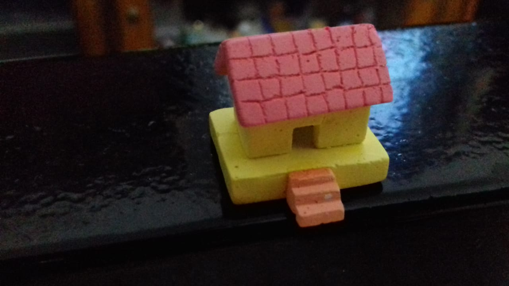

Home
It's chalk home
Home Sclupture
Sculpture is the branch of the visual arts that operates in three dimensions. Sculpture is the three-dimensional art work which is physically presented in the dimensions of height, width and depth. It is one of the plastic arts. Durable sculptural processes originally used carving (the removal of material) and modelling (the addition of material, as clay), in stone, metal, ceramics, wood and other materials but, since Modernism, there has been almost complete freedom of materials and process. A wide variety of materials maybe worked by removal such as carving, assembled by welding or modelling, or moulded or cast.